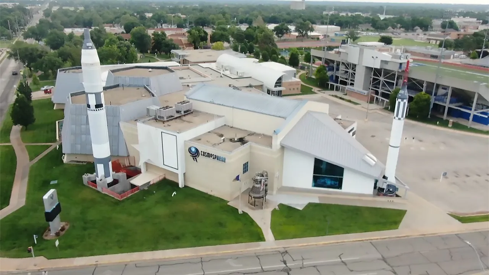
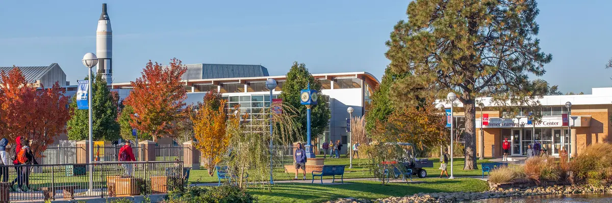
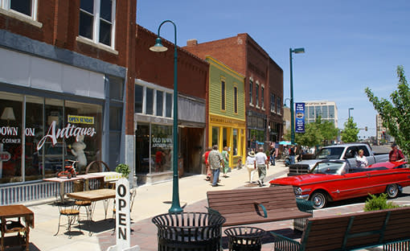

Moving to Hutchinson? Here's What You Need to Know
How the two sides of the river fit together, when to schedule the truck, and where your things go in between.

Hutchinson is the Reno County seat, and a move here comes with a choice most people from out of town don’t see coming: which side of the Arkansas River to live on. This guide covers how Hutchinson and South Hutchinson fit together, which highways you will use, when to schedule the truck, and what to do with a houseful of furniture when your dates don’t line up.
Hutchinson and South Hutchinson: Two Cities, One River
The Arkansas River runs between Hutchinson and South Hutchinson. They are separate cities, but people cross the river every day for work, school and errands, so look at homes on both sides before you rule one out.
Most of the places you have heard about are on the Hutchinson side: Hutchinson Community College, the Cosmosphere, Strataca (the underground salt museum), Carey Park, Dillon Nature Center and the Kansas State Fair. South Hutchinson is the smaller of the two cities and sits on the far bank, on the way in from Wichita.
Reno County Storage has one location on each side, which matters on moving day because you want the unit on the same side as the new front door:
- Hutchinson: 2511 E 17th Ave, a fenced lot with gated entry.
- South Hutchinson: 712 N Walnut St.
The Highways You Will Learn First
- US-50 is the main east-west route. Newton is about 35 minutes east.
- K-61 runs northeast to McPherson, about 30 minutes away.
- K-96 runs southeast to Wichita, which is under an hour.
- K-14 is the north-south state highway through Reno County.
Plenty of people who work in Hutchinson live in one of the smaller towns nearby, such as Buhler, Haven, Nickerson, Yoder or Pretty Prairie. If you are still deciding between town and country, rent first and buy later. A storage unit holds whatever the rental can’t.
Timing the Move Around the Fair and the Weather
September: State Fair traffic
The Kansas State Fair is held in Hutchinson each September. Expect heavier traffic and tighter parking near the fairgrounds while it runs. If your move lands in fair season, reserve the truck early, plan your route into town ahead of time, and unload early in the day.
Spring and summer: storms and heat
Spring and summer bring thunderstorms with hail and high wind, and summers are hot and humid. Check the forecast the night before, start loading at first light, and keep tarps and stretch wrap in the cab. Do not leave a loaded open trailer parked outside overnight. If the sky turns, a drive-up unit is a dry place to empty the truck the same day, even when the house is not ready.
Winter: build in a spare day
Winters are cold. Leave a spare day in the plan in case the weather costs you one, and let cold electronics warm to room temperature before you plug them in.
When Move-Out and Move-In Dates Don’t Match
Three situations come up again and again: the old lease ends before the new house closes, the truck arrives before the new place is ready, or you take a short-term rental while you look for something to buy. In each one, the furniture needs somewhere to wait.
Every rental at Reno County Storage is month-to-month, with no long-term contract. You can rent from a phone or laptop before you leave your old town:
- Pick a location and a unit: Hutchinson or South Hutchinson.
- Sign the lease and pay online by card, Cash App or ACH. Cash is not accepted.
- Get access right away, so the unit is ready when the truck pulls in.
Every unit is ground level with a roll-up door you can back up to, and a free lock comes with the rental. When you are ready to leave, give notice before the end of the month. For loading order and how to stage a unit so the first night in the new house goes smoothly, see how to use a storage unit during a move.
Sizes and Monthly Prices on Each Side of the River

- 10×10 (one-bedroom apartment): $95 in Hutchinson, $75 in South Hutchinson.
- 10×15 (two-bedroom apartment): $105 in Hutchinson, $85 in South Hutchinson.
- 10×20 (two to three-bedroom house): $125 in Hutchinson, $115 in South Hutchinson.
- 10×25 (three-bedroom house): $145, Hutchinson only.
- 10×30 (four or more bedrooms): $155, Hutchinson only.
- 15×30 (a full house, or a boat or large vehicle): $190, South Hutchinson only.
These are regular monthly rates at the time of writing and they can change, so check current rates for both locations before you book. The size guide shows what fits in each unit.
Looking After a Household in Storage
The units are insulated, but they are not climate-controlled. For a few weeks or months between homes, that suits most furniture, appliances and boxes. Pack for the season anyway: keep boxes off the floor, leave a little air space along the walls, and read our notes on Kansas humidity and stored belongings before you load wood furniture or mattresses in July.
Both locations have cameras recording 24/7 and bright lighting on every aisle. The 17th Ave lot adds a perimeter fence and gated entry.
The tenant protection plan, required with every rental unless your own homeowners or renters policy covers stored items, covers $2,000, $3,000 or $5,000 of stored property for $9, $14 or $24 a month. It does not cover flood, and it does not cover cash, documents, jewelry or firearms, so carry those with you in the car.
Frequently Asked Questions
Which Reno County Storage location should I use if I’m moving to South Hutchinson?
Use the South Hutchinson location at 712 N Walnut St, which is on the same side of the Arkansas River as your new home. The Hutchinson location is at 2511 E 17th Ave. Both share one phone number, (620) 662-7336.
Can I rent a storage unit in Hutchinson before I arrive in town?
Yes. You can pick a location and unit online, sign the lease and pay from a phone or laptop, and you get access right away. That means the unit can be ready before your truck reaches Reno County.
What size storage unit do I need for a three-bedroom house?
A 10×20 holds a two to three-bedroom house and a 10×25 gives a three-bedroom house more room. At the time of writing a 10×20 is $125 a month in Hutchinson and $115 in South Hutchinson, and a 10×25 is $145 in Hutchinson. Prices can change, so check current rates before you book.
Is it a bad idea to move to Hutchinson during the Kansas State Fair?
No, but plan for it. The fair is held in Hutchinson each September, and traffic and parking near the fairgrounds are heavier while it runs. Reserve your truck early, map your route ahead of time and unload early in the day.
How long do I have to keep a storage unit when I’m between homes?
There is no minimum beyond the month you are in. Rentals are month-to-month with no long-term contract, and you give notice before the end of the month when you are ready to move out.
Questions about which side of the river or which size makes sense for your move? Call or text (620) 662-7336, or see both locations and current rates. Reno County Storage is veteran-owned and gives a 15% discount to active duty military, veterans and first responders.
More from the Blog

Why Self Storage Makes Moving Easier
Step by step: staging a home for sale, covering a closing-date gap, and loading a unit in the right order.

A Student’s Guide to Storage in Hutchinson
Summer storage for HutchCC students: what size fits, splitting a unit with a roommate, and what it costs.

Storage Solutions for Reno County Homeowners
Garage overflow, mowers, boats, trailers and estates, with sizes and prices at both locations.